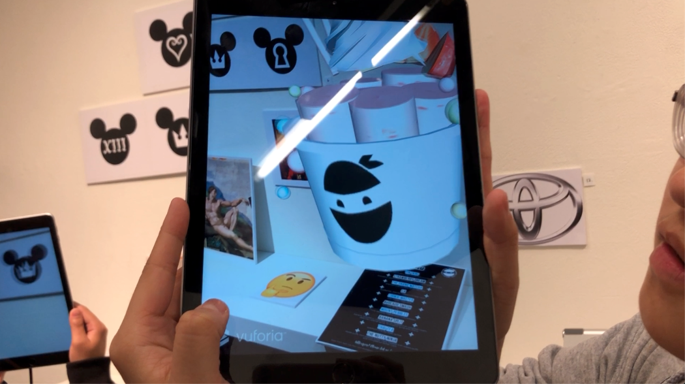
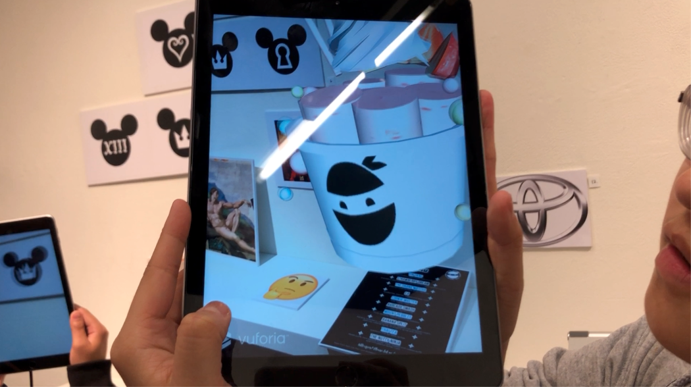
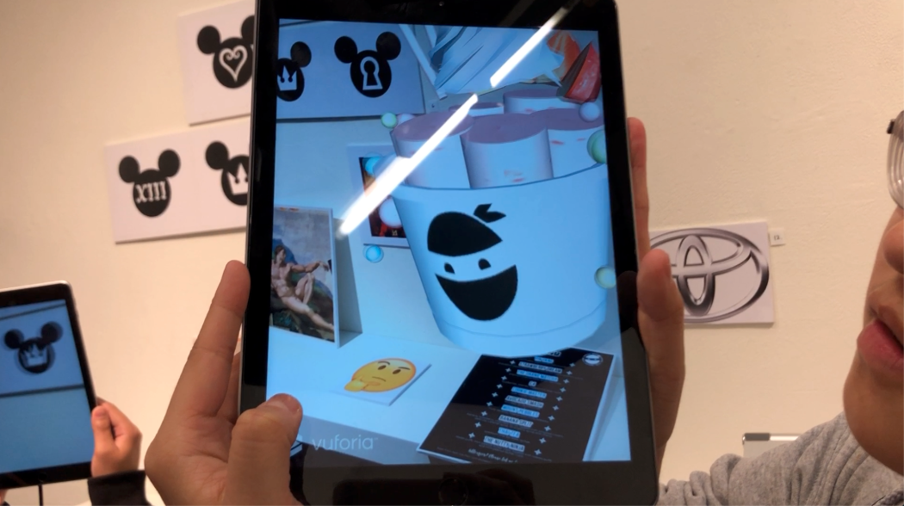

Looks Good is a lively and interactive 3D object that uses augmented reality (AR) to establish the brand identity of Frozen Ninja, a handcrafted ice cream roll shop. I wanted to integrate my freelance graphic design work at Frozen Ninja to this AR project as a reflection on my skills in design and layout.
When we visit restaurants, our eyes tend to search for some sort of menu, filled with text and images. However, if there are no images, deciding what to order or what to eat becomes even more difficult. I found that integrating AR will become a fun way to interact with menus that only have text. A visualization of the food item will appear on screen when a customer points their phone camera on the description associated to it on the menu. This way, customers can see what looks appetizing and appealing before ordering. This project allowed me to witness how visualizations become an important factor in decision-making.
